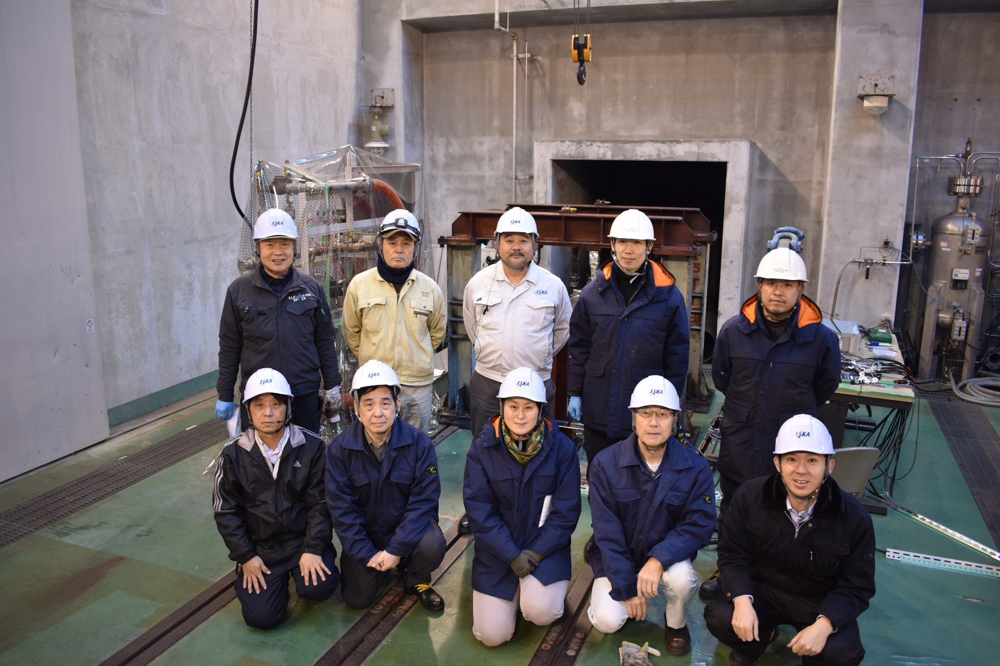

社会連携
企業・研究機関・自治体との連携を通じて、 基礎研究から社会実装までを推進しています。

社会連携
齋藤研究室では、宇宙推進・燃焼・流体・計測技術を中心として、 産学官連携を積極的に推進しています。 企業・研究機関・自治体との共同研究を通じて、 基礎研究から実機実証・社会実装までを見据えた研究開発を進めています。
ハイブリッドロケット、宇宙推進システム、 極限環境燃焼、流体制御、実験計測、 データ解析・モデル化などを対象として、 幅広い研究テーマに取り組んでいます。
連携の方針
当研究室では、これまでに複数の産学官共同研究を実施しており、 学術論文の発表や特許出願等にも積極的に取り組んできました。
特に、 「基礎研究の深化」と 「社会実装・実機応用」 の両立を重視しており、 実験・解析・モデル化を統合した研究開発を推進しています。
また、大学内に閉じた研究活動に留まらず、 企業・自治体・研究機関との協働を通じて、 新たな宇宙推進技術や先端工学技術の創出を目指しています。
共同研究、受託研究、技術相談、 学生インターンシップ、 実験・解析協力等につきまして、 ご関心がございましたらお気軽にご連絡ください。
主な連携テーマ
- 軌道離脱用宇宙推進システムに関する共同研究・技術開発
- 低毒推進技術の研究開発
- 燃焼・流動現象に関する実験計測
- 大規模データの低次元化・異常検知に関する研究開発
- ロケット燃焼データ内部弾道解析技術の研究開発
- 宇宙機コンポーネント研究開発
- 地域企業・自治体との技術連携および人材育成
共同研究・技術相談について
宇宙推進分野に限らず、 燃焼、熱流動、計測、データ解析、システム設計などに関する 技術相談にも対応しております。
研究内容や連携形態につきましては柔軟に対応可能ですので、 まずはメールにてお気軽にお問い合わせください。